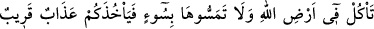

SÂLİH (A.S.) VE SEMÛD
KAVMİ
61. Semûd kavmine de kardeşleri Sâlih’i (gönderdik). Dedi ki: “Ey kavmim,
Allah’a kulluk edin, O’ndan başka tanrınız yoktur! Sizi yerden (topraktan) yaratan
ve orada yaşatan O’dur. O’ndan mağfiret dileyin, sonra da O’na tevbe edin. Çünkü
Rabb’im yakındır, duâları kabul edendir.”
62. Dediler ki: “Ey Salih, sen bundan önce içimizde ümit beslenen birisiydin.
(Şimdi) atalarımızın taptığı şeylere tapmaktan bizi men mi ediyorsun? Doğrusu biz
senin bizi kendisine çağırdığın şeyden ciddi bir şüphe içindeyiz.”
63. (Sâlih) dedi ki: “Ey kavmim, eğer ben Rabbim tarafından (verilen) apaçık bir
delil üzerinde isem ve O bana kendinden bir rahmet vermişse, buna ne dersiniz? Bu
durumda O’na karşı gelirsem beni Allah’tan kim korur? O zaman siz de bana ziyan
vermekten fazla bir şey yapamazsınız.”
64. “Ey kavmim, işte size mucize olarak Allah’ın devesi. Bırakın onu Allah’ın
arzında yesin (içsin). Ona bir kötülük dokundurmayın, yoksa sizi yakın bir azap
yakalar.”